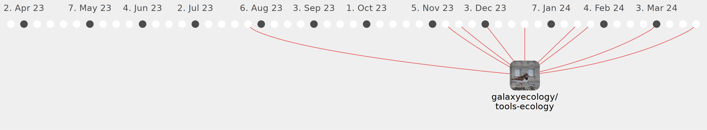

PaulineSGN

Commits all-time: 67
Commits last year: 67

(67)
- cfd4fdd
- c76715c
- 76fd760
- 415fd9c
- 05f79ad
- e872150
- 2c4c9dd
- cf066b8
- 25072a1
- f03f583
- 9405171
- 06b0db2
- 580f4a7
- e5ae65a
- 70831a8
- 41d82c7
- 7f6b1ed
- 07ca2a7
- 44654b4
- 7129034
- 7e6e410
- 55af63d
- 6e1f875
- 023bad8
- ddd6dc0
- 0dcb7a6
- 7b0c68e
- 155f02f
- a9112aa
- fe002ee
- e313ce6
- 6ebef53
- d406b94
- 044fea5
- 1f28fb7
- 0731b20
- b27d4b6
- c39eed5
- 25cabef
- eb5a543
- 34a8c63
- 2e81105
- fb5473b
- 7954430
- 0f01ab5
- 821cc41
- 9b00d64
- 89adaf7
- 7e387d7
- 4c861df
- bd93d61
- f0e762d
- 217089f
- 80e1488
- 55fcb23
- 6d69f85
- ab3ee5c
- 8acb91b
- 72e95bb
- 3c70bb4
- 9900e43
- 800e52c
- 881aea4
- 9435e0c
- 4b8e0bb
- c992e37
- ecd84a9